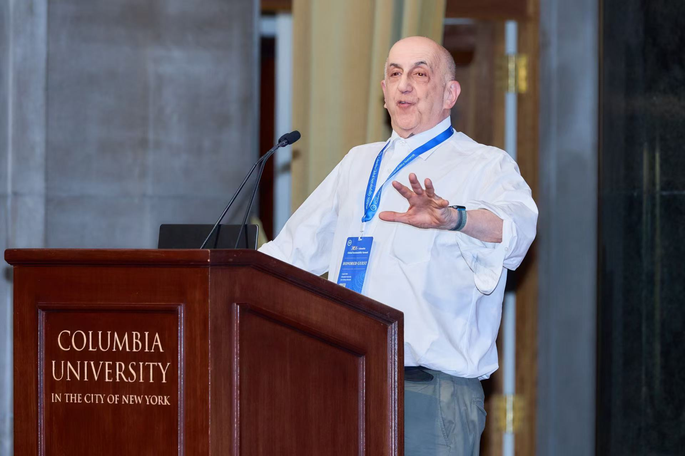

Beyond Research
Life
A small personal corner for places, performances, and moments outside research. I wanted this page to feel lighter and more human than a CV, while still fitting naturally within an academic website.
Notes
Hiking, travel, musicals, and New York days.
Outside research, I enjoy traveling, hiking, taking photos, and finding performances or places that make a city feel memorable. This page can keep growing over time as a quieter record of life beyond coursework, models, and code.


